How does the impending motion of the system determine which side of the belt will have a larger tension?
How do you compute the contact angle \(\beta\) between the belt and pulley or cylinder?
How do you compute the tension differential on either side of the belt or cylinder for both flat and v-belts?
What determines the maximum torque transfer available from a pulley system?
When a belt, rope, or cable is wrapped around an object, there is potential for flexible belt friction. In Figure 9.5.1.(a) friction allows the sailors to control the speed that the mooring line pays out. The friction between the line and the bollard depends on the number of turns the line takes around the bollard post. In Figure 9.5.1.(b) friction forces prevent the belt from slipping allow it to transfer power from the motor to the drive pulley.
(a)Sailors handling a mooring line.
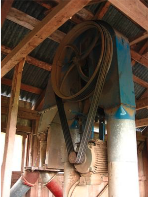(b)Power transmission pulleys.
Figure9.5.1.Applications of belts.
Subsection9.5.1Frictionless Belts
Imagine with a flat, massless cable or belt passing over a frictionless cylinder or pulley, in equilibrium. (Figure 9.5.2). A non-uniform distributed normal force acts at points of contact with the cylinder to oppose the tension in the belt and maintain equilibrium. The normal force varies as a function of the angle between the contact surface and the direction the belt tension.
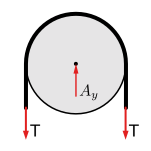(a)FBD Belt and pulley
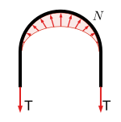(b)FBD of belt
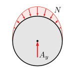(c)FBD of cylinder
Figure9.5.2.Free-body diagrams, equal tension.
Without friction, the two tensions must be equal otherwise the belt would slip around the cylinder. The only interaction force between the belt and pulley is the distributed normal force. Due to the symmetry of this example, the \(x\) components of the distributed force all cancel and the resultant is purely vertical. In other situations this will not be true.
Subsection9.5.2Friction in Flat Belts
When friction is available to oppose the sliding, the tensions in the two sides of the belt will not be equal and friction will cause the pulley to rotate. Alternately if the pulley is driven by an external moment, friction will cause one tension to increase and the other to decrease. This, of course, is the point of a belt and pulley system — power transmission from the belt to the pulley or vice-versa.
Figure 9.5.3.(a) shows a free-body diagram of a belt and pulley in equilibrium. The net moment caused by the two belts and the applied moment \(M\) are in balance. The system may be stationary, or it may be rotating at a constant velocity; however, it is impossible to tell from this diagram which direction.
Figure 9.5.3.(b) shows a free-body diagram of the belt. Since \(T_+\) is greater than \(T_-\text{,}\) in the absence of friction, the left side will move up, and the right side will move down, as indicated by the arrows which indicate the relative motion of belt with respect to the pulley. A distributed friction force \(F_\text{belt}\) between the belt and pulley which opposes the relative motion and maintains rotational equilibrium. A distributed normal force also exists to maintain equilibrium in the \(y\) direction.
Figure 9.5.3.(c) shows a free-body diagram of the pulley. The frictional and normal forces acting on the pulley are equal and opposite to those acting on the belt. The arrow indicates that the impending relative motion of the pulley with respect to the belt is counter-clockwise. The actual direction of rotation is not known or indicated. Friction always acts opposite to the direction of relative motion.
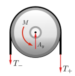(a)FBD of Belt and Pulley
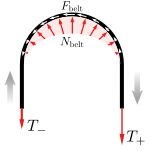(b)FBD of Belt
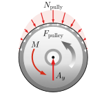(c)FBD of pulley
Figure9.5.3.Unequal Tensions
Increasing \(M\) or the belt tension ratio \(T_+/T_-\) will increase the power transmitted until the belt starts to slip. This occurs when the friction increases to the maximum available value \(F_\text{max} =
\mu_s M\text{.}\) At this point, motion (slipping) is impending.
We are interested in determining the range of values for the tension forces where the belt does not slip relative to the surface. For a flat belt, the maximum value for \(T_+\) depends on the magnitude of \(T_-\text{,}\) the static coefficient of friction between the belt and the surface \(\mu_s\text{,}\) and the contact angle \(\beta\) between the belt and the surface.
SubsubsectionContact Angle \(\beta\)
You will need to use the geometry of the pulleys to find the contact angle \(\beta\) between the belt and pulley. The belt will depart the pulley at a point of tangency, which is always perpendicular to a radius. To find \(\beta\) create one or more right triangles using the incoming and outgoing belt paths and apply complementary angles to relate the belt geometry to the contact angle. There is no simple rule for transferring cable angles over to the contact angle, but in general, extend radial lines from the center of the pulley out to the belt’s tangential lines. Next, create right triangles with each radial line and work to find all the angles which add up to the contact angle \(\beta\text{.}\)
Move the red dots to change the radii and separation of the pulleys to see the relation between those values and the contact angle \(\beta\text{.}\)
Figure9.5.4.Relationship between pulley geometry and contact angle \(\beta\text{.}\)
SubsubsectionBelt Tension
We have seen that when there is friction between a belt and a pulley, the tensions on either end of the belt are not the same. In previous problems, we simply guessed a direction for an unknown force, and then used the sign of the numerical answer to confirm or reverse our assumption. Unfortunately, this does not work for flexible belts, where we must make the correct determination before starting computations. So, how can we determine which side has the larger tension, and which side is smaller?
The following discussion guides you through two methods to make this decision. Figure 9.5.5 shows a pulley and belt system and the associated free body diagrams. The pulley is driven by a motor which supplies a counterclockwise moment of \(M\text{.}\) The belt is fixed, and holds the pulley in equilibrium until slipping occurs. Both the pulley and belt are assumed massless.
The grey arrows indicate the direction of impending motion. This is the motion which will occur if the belt slips. For the belt, which is fixed, this impending motion is relative to the pulley. For the pulley, motion is impending relative to the belt, but since it can actually rotate it also has absolute impending motion with respect to the earth.
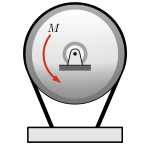(a)Problem Diagram
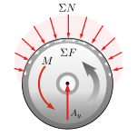(b)FBD of Pulley
(c)FBD of Belt
Figure9.5.5.Motor drive pulley with a fixed belt.
Method 1: Draw free-body diagrams and sum tensions along the cable.
Friction always opposes impending relative motion at the point of contact, so if you can determine the direction the belt will potentially slip, you also know the direction of the friction force. You can find out which tension is larger and which is smaller by drawing a free-body diagram of the belt and summing forces along it.
The free-body diagram Figure 9.5.5.(b) shows the forces acting on the pulley, which are:
Reaction force \(A_y\) from the fixed center axle.
A distributed normal force \(\Sigma N\) acting radially along the contact surface with the belt. 1
A distributed friction force \(\Sigma F\) acting along the contact surface, opposing moment \(M\) and the impending motion of the pulley.
The free-body diagram Figure 9.5.5.(c) shows the forces acting on the belt, which are:
The belt’s internal tension forces, labeled \(T_1 \) and \(T_2\) since at this point we don’t know their relative magnitudes.
A distributed normal force \(\Sigma N\) acting radially along the contact surface between the pulley and belt. These are the distributed normal forces on the pulley transferred equal-and-opposite to the belt.
A distributed friction force \(\Sigma F\) acting along the surface of the belt, again equal-and-opposite to the corresponding forces on the pulley. Since the belt is not actually moving these forces oppose the belt’s relative impending motion with respect to the pulley.
Summing forces along the belt, we find that the tension \(T_1\) plus the distributed friction force \(\Sigma F\) must equal \(T_2\) for equilibrium.
\begin{align*}
\Sigma F_\text{belt} \amp = 0\\
T_1+\Sigma F -T_2 \amp = 0\\
T_2 \amp = T_1+\Sigma F
\end{align*}
Therefore, the larger tension \(T_+ = T_2\) and the smaller tension \(T_- = T_1\text{.}\)
Method 2: Larger tension acts in the direction of the impending motion of the belt.
Following the logic of Method 1, it turns out that the larger tension always points in the direction of impending motion of the belt. It does not matter if the impending motion is relative as here with a fixed belt, or absolute as when the belt moves around a fixed object.
There are multiple ways to determine the smaller and larger tensions in a flexible belt system. You can use the interactive below to develop your intuition on the relationship between belt tension, pulley moment, friction and relative motion.
This interactive shows FBDs of a belt and pulley system, and the isolated belt. You can change the belt tensions and the moment will adjust to maintain equilibrium, or vice versa. You can also adjust the coefficient of static friction \(\mu_s\text{.}\)
For simplicity, the radius of the pulley is \(\m{1}\text{.}\)
It is impossible to tell from this diagram whether the system is rotating CW or CCW at constant velocity, or is stationary. If the required friction \(F_f\) is greater than \({F_f}_\text{max}\) the belt will slip. If either belt tension is less than zero, it will go slack.
Figure9.5.6.Friction transmits power between the belt and pulley.
SubsubsectionChange in Belt Tension due to Friction
Applying the equilibrium equations to a free-body diagram of a differential element of the belt enables us to derive the relation between the two belt tensions, the contact angle \(\beta\text{,}\) and the friction coefficient \(\mu_s\text{.}\)
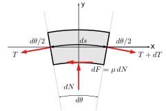
Figure9.5.7.FBD of a differential element of a flexible belt.
where we have used the small angle approximation \(\sin(d\theta/2) \approx d\theta/2\text{.}\) Dropping the second order differential term \(dT\; d\theta\) as negligible, yields
\begin{equation*}
dN = T d\theta
\end{equation*}
.
Solving simultaneously by eliminating \(dN\) leaves us with
,where \(e\) is the natural log base 2.718, \(\mu\) is the friction coefficient between the belt and pulley, and \(\beta\) is the contact angle between the belt and pulley in radians. The larger this ratio is, the more torque the belt can transmit.
Notice that the belt tension ratio is independent of the surface size and shape, provided the belt makes continuous contact.
Subsection9.5.3Torque in Belt Systems
A belt-driven systems consists of an input pulley driven by a rotational power source and one or more output pulleys driving loads. The maximum torque that can be transmitted by the system is determined by the maximum value for \(T_+\) before slipping occurs at either the input or any output pulley. We will need to consider each of the pulleys independently.
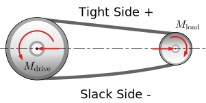(a)Belt Drive System
(b)Driving Pulley
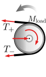(c)Load Pulley
Figure9.5.8.Unequal Tensions
Start by solving for the resting tension \(T_-\text{.}\) This is the tension the belts prior to any motion or power transfer. Practically, machines provide adjustments to pre-tension the belt to insure sufficient normal force when started. When we turn on the machine and increase the torque, the resting tension remains constant while the tension on the drive side \(T_+\) increases.
If the pulleys have the same coefficients of friction, it can be assumed that the belt will first slip at the smaller of the two pulleys as the smaller pulley has a smaller contact angle \(\beta\text{.}\) See Figure 9.5.4.
Once we have the maximum value for \(T_-\) , we can use that to find the maximum input and output moments. Next, to find the torque, we then find the net moment exerted by the two tension forces, where the radius of the pulley is the moment arm.
The maximum input torque \(M_\text{i}\) before slipping is
Unlike the torque which steps up or down based on the pulley radii, the input and output powers are equal to each other, ignoring all efficiency losses.
Subsection9.5.4V-Belts
A flat belt pulley interacts with one surface of the belt. A V shaped pulley allows the belt to wedge tightly in the groove, increasing friction and torque transmission. A V-belt’s enhanced friction comes from the increased normal forces which are a function of the groove angle \(\alpha\text{.}\)
The sum of the normal force vertical components is the same for a flat belt or V-belt. However, the horizontal components of the normal forces in a V-belt, effectively pinch the belt, thereby increasing the available friction force. The belt should not contact the bottom of the groove, or else the wedge effect is lost
As we can see from the equation above, smaller groove angle and steeper sides result in a larger maximum tension ratio, resulting in higher torque transmission. The trade-off with steeper sides, however, is that the belt becomes wedged more firmly in the groove and requires more force to unwedge itself as it leaves the pulley. This unwedging force decreases the efficiency of the belt-driven system. An alternate design choice would be a chain-drive which carries very high-tension differences efficiently.
The distributed normal forces is not symmetrical as drawn, but actually biased towards the right, in order to have the net leftward force required to oppose the net friction acting to the right. Fortunately, the actual shape is not significant to us.